Costa del Sol · Casares
Property for sale in Casares
Apartments with sea and golf views in Casares Costa, homes in the Finca Cortesín resort and villas with views of the coast. Here are the properties we sell in Casares today, with a short guide to the areas and what buying really costs.
- 17properties for sale in Casares
- from €245,000for a new apartment
- about 35 minto Gibraltar airport
- Finca Cortesína luxury golf resort
For sale now
Properties for sale in Casares
Mostly new apartments with 2 or 3 bedrooms and sea or golf views in Casares Costa, plus penthouses and luxury homes in Finca Cortesín. Prices are as listed today; ask us for the current availability.
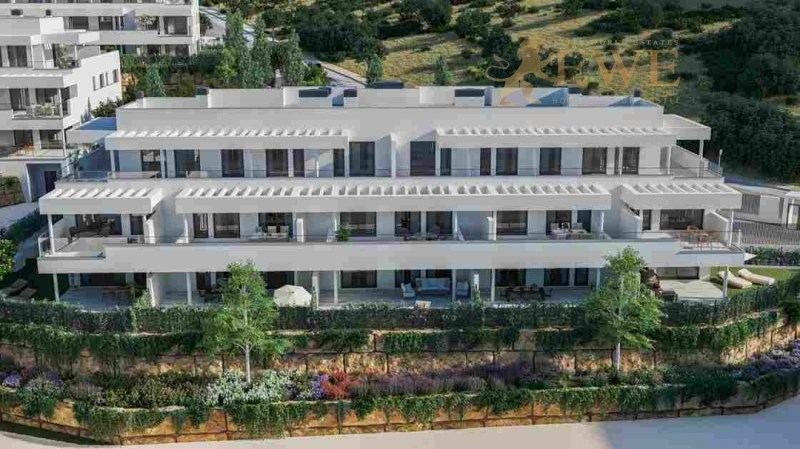
EWE3894Casares
New Apartments with Terraces in Casares Costa
€245,000
1 bedroom · 1 bathroom · 51 m²Ref. EWE3894
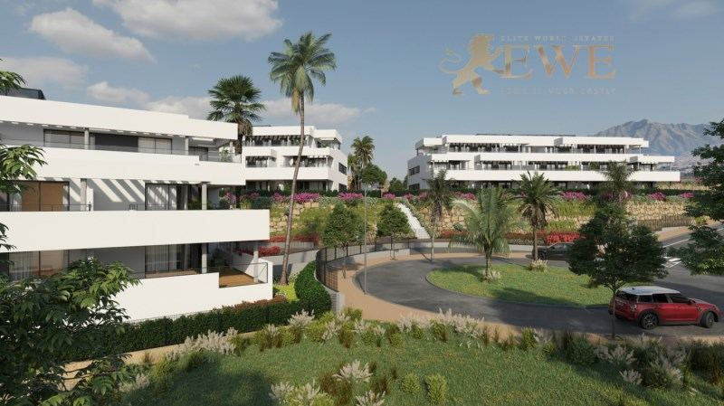
EWE3649Casares
Attractive apartment with sea and mountain views in Casares
€301,000
2 bedrooms · 2 bathrooms · 64.42 m²Ref. EWE3649
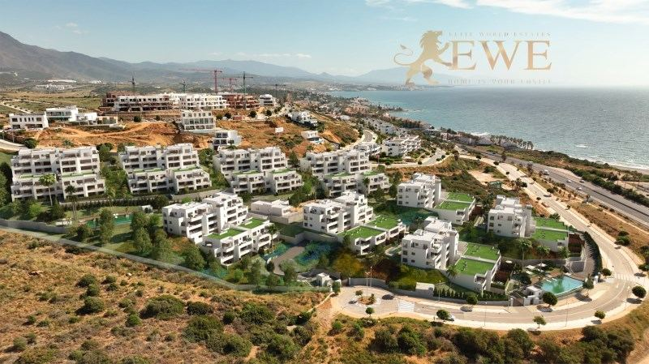
EWE3166Casares
Modern apartment with sea views in Casares Costa
€398,000
2 bedrooms · 1 bathroom · 70 m²Ref. EWE3166
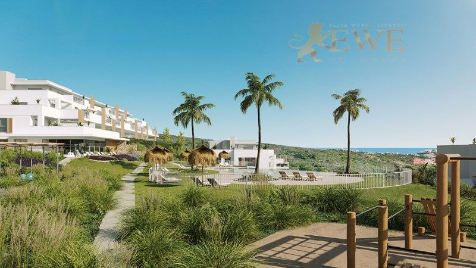
EWE3778Casares
Modern Apartments with Sea and Golf Course Views in Casares Costa
€428,000
2 bedrooms · 2 bathrooms · 78 m²Ref. EWE3778
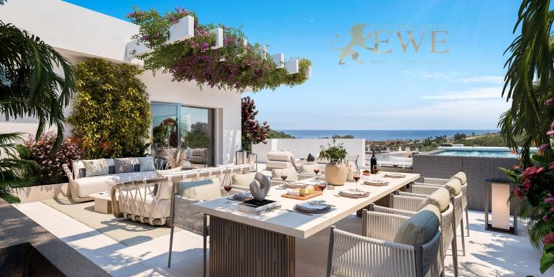
EWE3315Casares
Elegant flat with sea views in Casares Costa Golf
€429,000
2 bedrooms · 2 bathrooms · 67 m²Ref. EWE3315
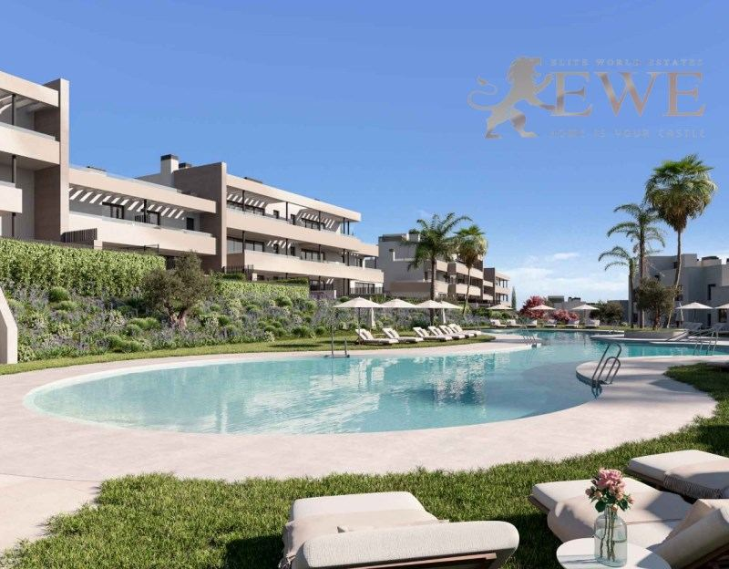
EWE3268Casares
Elegant apartment next to the golf course in Casares Costa
€435,000
2 bedrooms · 2 bathrooms · 70 m²Ref. EWE3268
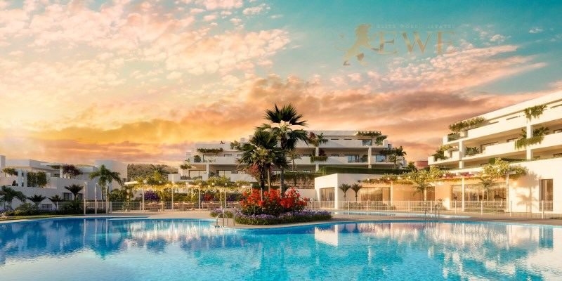
EWE3681Casares
Fantastic apartment with sea views in Casares.
€446,000
2 bedrooms · 2 bathrooms · 68 m²Ref. EWE3681
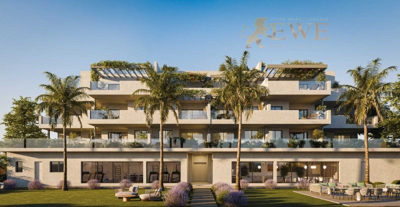
EWE3838Casares
Elegant Apartments Close to the Sea in Casares Costa
€450,900
2 bedrooms · 2 bathrooms · 70 m²Ref. EWE3838
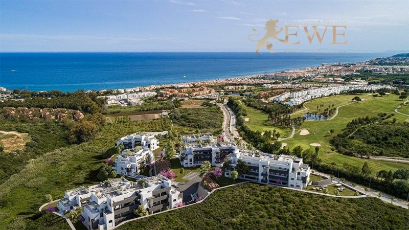
EWE3781Casares
Apartments with Sea and Golf Course Views in Casares Costa
€450,900
2 bedrooms · 2 bathrooms · 71 m²Ref. EWE3781
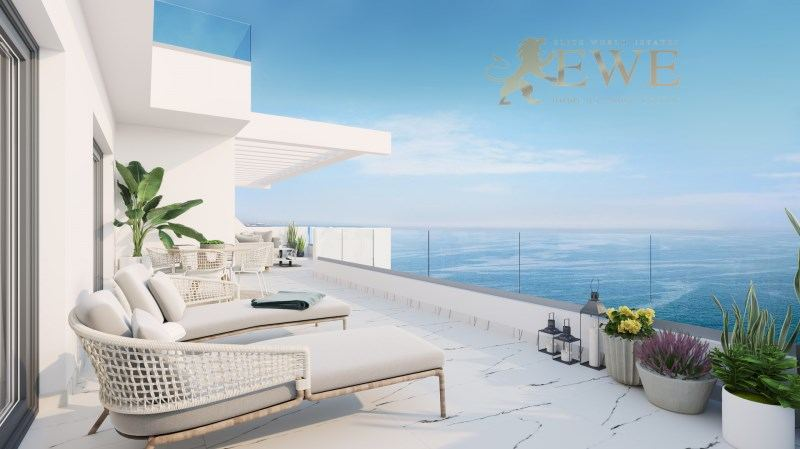
EWE3146Casares
Apartment with sea view, 250m from the beach in Casares
€505,000
2 bedrooms · 2 bathrooms · 102 m²Ref. EWE3146
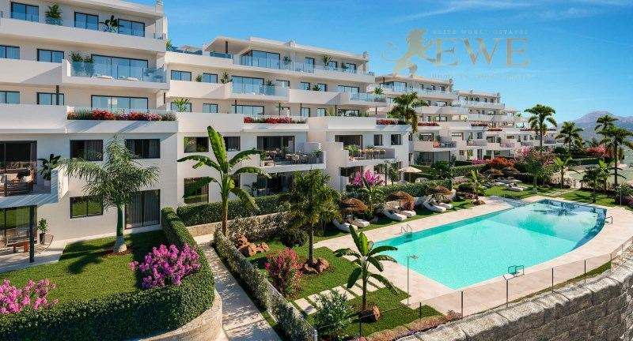
EWE2157Casares
Elite apartment with sea view in Finca Cortesín, Casares
€584,000
2 bedrooms · 2 bathrooms · 111 m²Ref. EWE2157
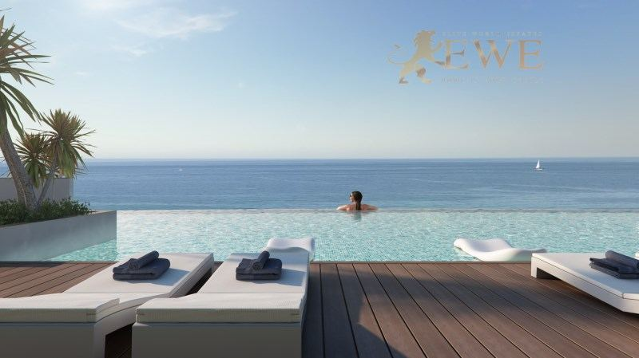
EWE3167Casares
Wonderful apartment with sea views in Casares Costa
€620,000
3 bedrooms · 2 bathrooms · 94 m²Ref. EWE3167
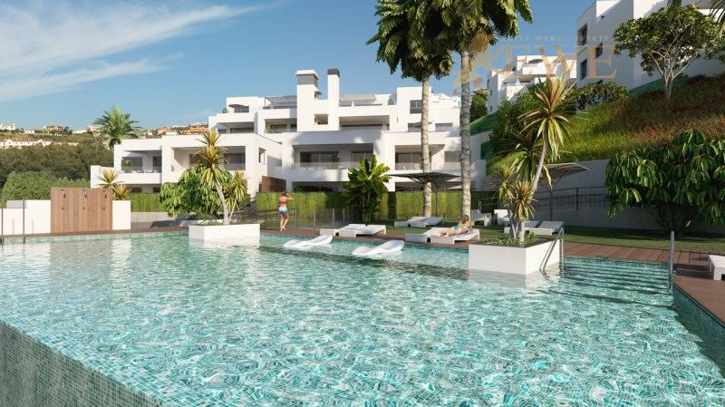
EWE3399Casares
Wonderful penthouse with sea views in Casares Costa
€620,000
4 bedrooms · 3 bathrooms · 125 m²Ref. EWE3399
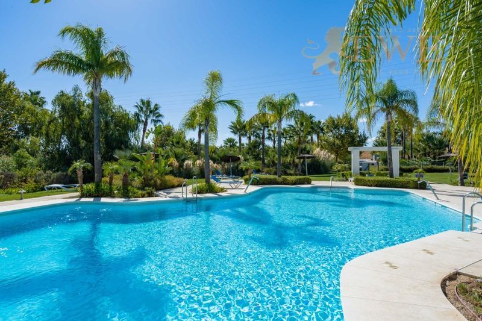
EWE2212Casares
Penthouse in Estepona, Alcazaba Lagoon
€649,950
2 bedrooms · 2 bathroomsRef. EWE2212
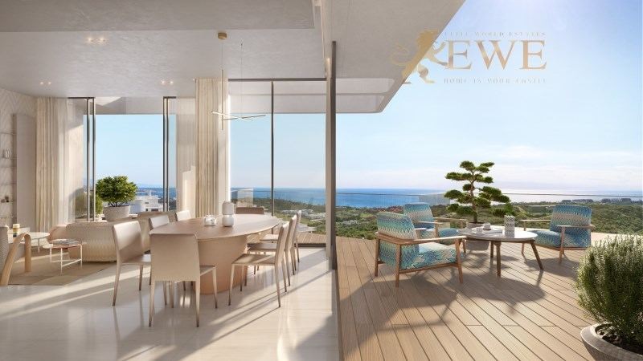
EWE3237Casares
Dazzling apartment with outstanding sea views in Casares
€1,001,020
2 bedrooms · 2 bathroomsRef. EWE3237
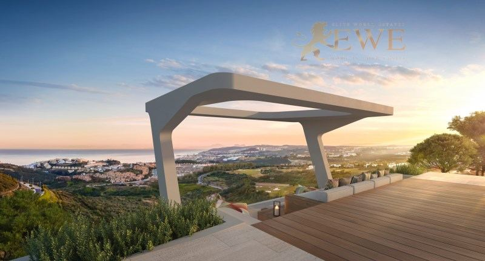
EWE3238Casares
Exclusive apartment in the elite Finca Cortesin Resort
€2,161,990
3 bedrooms · 3 bathroomsRef. EWE3238
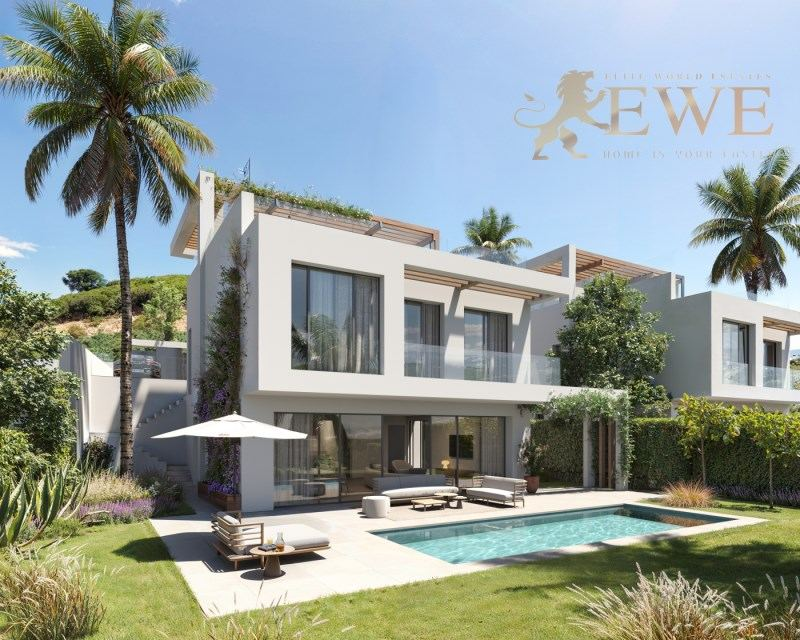
EWE3895Casares
Stunning villa with coastal views in Casares
€2,900,000
4 bedrooms · 4 bathrooms · 211 m²Ref. EWE3895
The city
Living in Casares
Casares is a municipality on the western Costa del Sol, between Estepona and Manilva. Its village is one of the most beautiful in Andalusia: white houses on a steep hill, crowned by the ruins of a castle, about 15 minutes inland from the sea.
Most homes for sale are in Casares Costa, the coastal part, with beaches, golf courses and modern residential complexes with views over the sea to Gibraltar and Africa. Here you also find Finca Cortesín, a luxury resort with a golf course, a hotel and a beach club.
Life here is quieter and prices are lower than in Marbella, while Estepona's shops and services are about 15 minutes away. Gibraltar airport is about 35 minutes away by car and Málaga airport about an hour and a quarter.
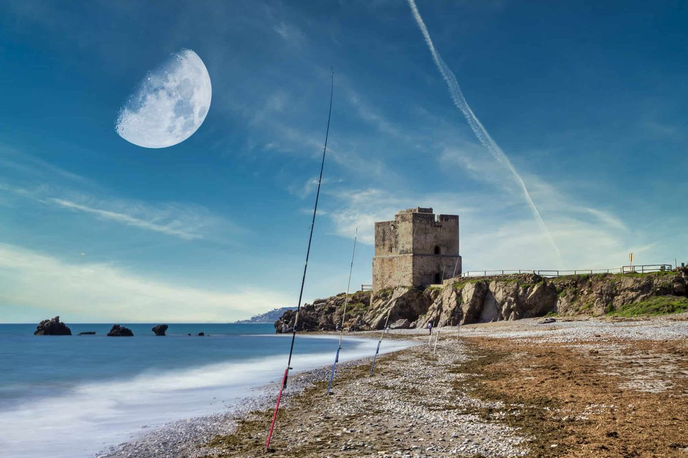
Where to buy
The main areas of Casares
Casares Costa
The coastal strip with beaches and modern complexes. Apartments and penthouses with sea views, many close to the beach.
Casares Golf
The area around the golf courses a few minutes inland. Apartments with golf and sea views, often with large terraces.
Finca Cortesín
A luxury resort with a golf course, a hotel and a beach club. Exclusive apartments and villas.
Casares village
The white village on the hill, with a castle, small squares and views. Village houses and a few apartments.
Budget
What it costs to buy in Casares
On top of the price you pay tax and fees. For a new home at €450,900, for example, that is €45,090 VAT and €5,411 stamp duty, plus notary, land registry and legal fees. Taxes on resale homes are different, so always ask us for the exact figure for the home you like.
| New build | 10% VAT (IVA) + 1.2% stamp duty (AJD) |
|---|---|
| Resale home | 7% transfer tax (ITP) |
| Notary, registry, lawyer | about 1.5–2.5% of the price |
| Every year | IBI property tax and community fees, which depend on the home |
Questions
Buying property in Casares: questions and answers
How much does an apartment cost in Casares?
Our new apartments in Casares start at €245,000 today. Most apartments with 2 or 3 bedrooms we sell in Casares Costa cost between €300,000 and €620,000. In Finca Cortesín, apartments cost from about €580,000 to more than €2 million, and our villa with coastal views is €2.9 million.
Casares or Estepona: which is better?
Estepona is a larger town with shops, a hospital and an old town on the seafront. Casares Costa is quieter, with golf and newer homes, and prices are often lower. Estepona is about 15 minutes away by car.
How far is Casares from the airport?
Gibraltar airport is about 35 minutes by car, and Málaga airport about 110 km away, around an hour and a quarter.
What costs are there on top of the price?
In Andalusia you pay 10% VAT and 1.2% stamp duty on a new build, and 7% transfer tax on a resale home. Notary, land registry and legal fees add about 1.5–2.5%.
Can foreigners buy property in Casares?
Yes. Anyone can buy property in Spain. You need a Spanish NIE tax number and usually a Spanish bank account, and we help you with both. See our guide to the NIE number.


Looking for a home in Casares?
Tell us your budget and what you need. We reply within one working day, in English, German, Spanish or Polish.